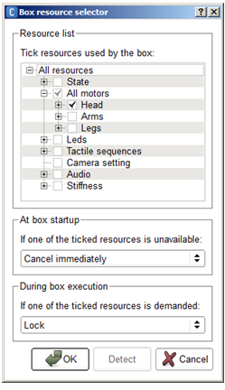

ALResourceManager¶
NAOqi Core - Overview | API | Tutorial
What it does¶
ALResourceManager offers a way to manage resources. A resource can be: an exclusive use of motor, microphone, LEDs, CPU, stiffness parameter, camera settings, a ball...
ALResourceManager allows you to:
- avoid that another behavior uses the resources you need
- synchronize movement, LEDs, sounds...
- Run specific actions when another behavior wants your resources. For example, stop properly a walk before stopping a behavior that walk.
How it works¶
Resources follow a resource hierarchy¶
To see all resources and the corresponding owner, use Choregraphe and launch the Resource viewer panel.
Taking a parent resource automatically takes all child resources.
Resource manager uses an object behavior hierarchy¶
Suppose you create a behavior to play football. First, the robot should search the ball without moving. If the robot finds the ball and needs to walk, you want to be sure that resources are available before walking.
Resource manager allows taking a resource in a root object or root behavior, all child objects will automatically take the resource to parent but child can enter in conflict each others.
Free CPU¶
Resource manager informs conflict without resolving the conflict, the operation takes no-cpu. The behavior is notified and decides to reject demand or release resources.
Resource management is explicit¶
Low level function call won’t reserve resource and will use their own and specific hidden resource management (a simple mutex most of the time). If you want to manage resource (probably share behaviors), before calling a method, you’ll need to reserve resources you need and release them after call.
Resource manager allows synchronizing a group of resources¶
You can reserve both head motors, text to speech and LEDs to be sure to synchronize movements, speech and LEDs.
The group of resources is managed exactly as one resource:
- During a request, loosing one resource releases all resources.
- The timeout is the addition of all resources wait.
- Request a group cannot deadlock.
Performances and Limitations¶
Performances
The resource manager is free CPU.
Limitations
Resource allocation is explicit. If you want to resource manage a method, you need to make an explicit call to resource manager.
Getting started¶
Edit resources from Choregraphe¶
The easiest way to edit the resources of a box is to right click the box and choose Edit resources.
{kind=link}
For further details, see: Box resource selector.
To understand the interaction between boxes, see the Tutorial about the resource manager.
You can also play a box and check the taken resources using the Resource viewer panel.
Call resource manager from python¶
# create proxy on resource manager
proxy = ALProxy("ALResourceManager","localhost",9559)
#createResource in root (parent resource is "")
proxy.createResource("newResource","")
#check resource is free
free = proxy.areResourcesFree(["newResource"])
# acquire the resource
# acquireResource(resource name, owner name, callback to notify you that someone want the resource, timeout)
proxy.acquireResource("newResource", "newOwner", "callback", 1)
#release resource
proxy.releaseResource("newResource", "newOwner")